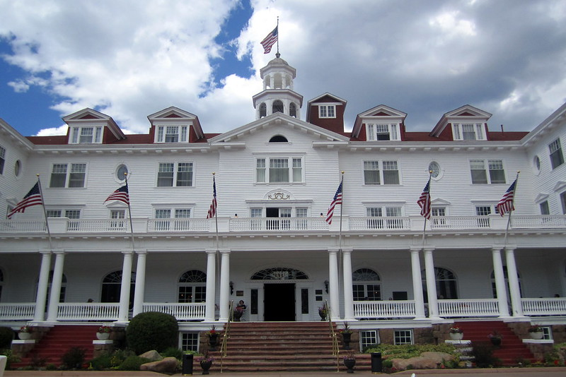
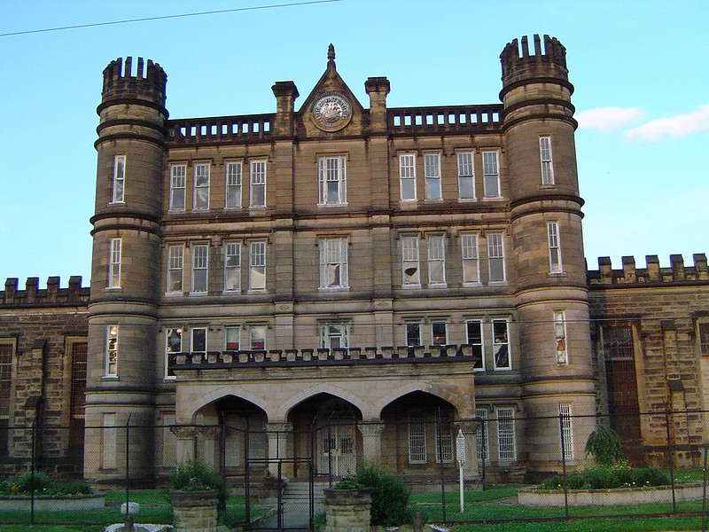
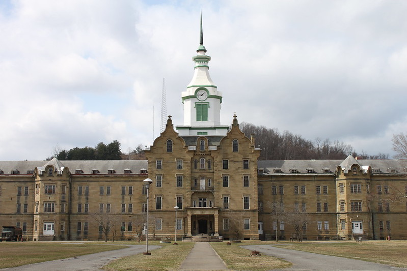
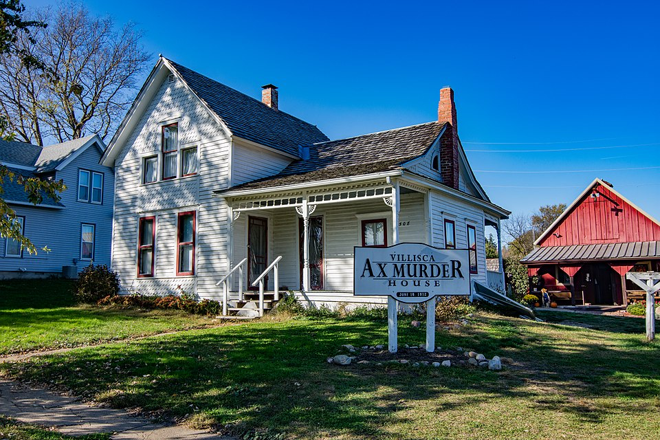
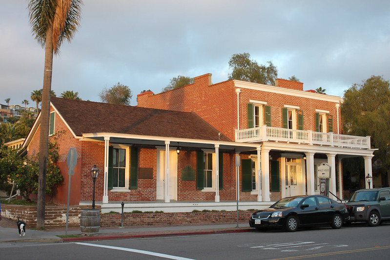
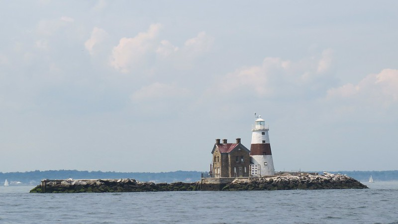
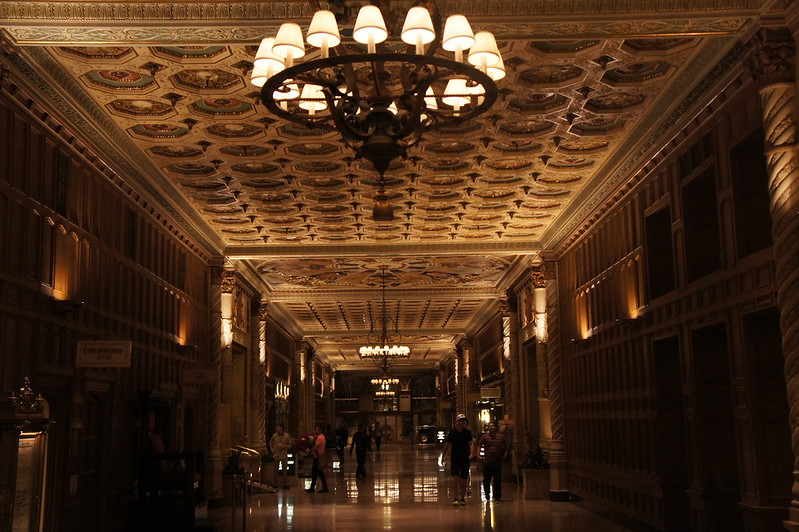

The Stanley Hotel
The Stanley Hotel is located in Estes Park, Colorado, known for its Georgian architecture and luxurious interiors since 1909. Its hauntings inspired Stephen King's The Shining, with guests reporting phantom piano music and ghost sightings. The hotel now embraces its reputation with nightly tours.

Moundsville Penitentiary
Located in West Virginia, this penitentiary was one of America’s most violent prisons. Nearly a thousand men died here from executions or riots. Closed in 1995, its cells are said to still echo with the screams of the condemned.

Trans-Allegheny Lunatic Asylum
Opened in 1864, this massive asylum held thousands of patients until closing in 1994. Many perished within its walls, and today ghost hunters can explore its four haunted hotspots on overnight tours.

Villisca Axe Murder House
Site of a brutal 1912 family murder, this small Iowa home is now open for overnight stays. Visitors often report footsteps, voices, and sightings of shadowy figures carrying an axe.
RMS Queen Mary
The RMS Queen Mary in Long Beach was a luxury liner turned hotel, but countless deaths aboard have left it haunted. Guests claim to see drowned passengers and hear ghostly footsteps echoing through the halls.

The Whaley House
Built in 1857 in San Diego atop the site of a public gallows, the Whaley House is said to host the spirits of both the executed and the Whaley family itself, whose tragic fates are tied to the home.

Execution Rocks Lighthouse
Situated off Long Island’s coast, legend says British soldiers chained prisoners to the rocks to drown during high tide. The lighthouse remains a site of eerie lights and whispers.

The Biltmore Hotel (Los Angeles)
Opened in 1923, this glamorous LA landmark is forever linked to the 1947 “Black Dahlia” murder. Guests and staff report seeing the ghost of Elizabeth Short in mirrors and corridors.